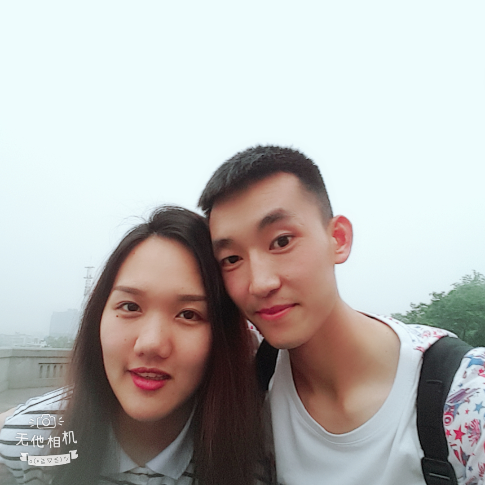
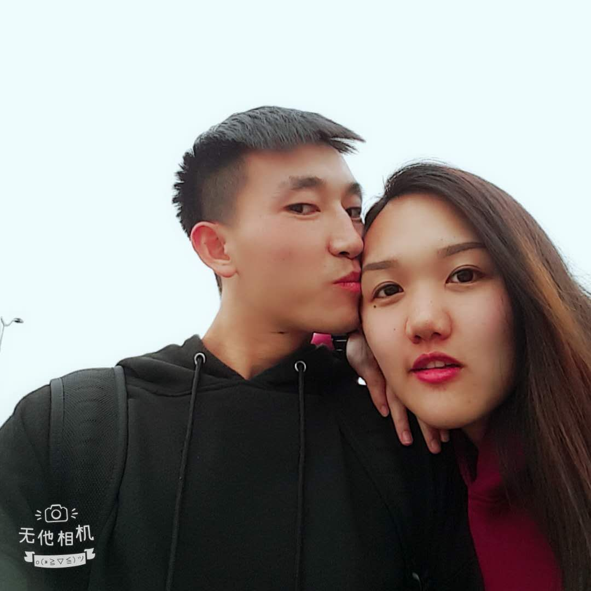
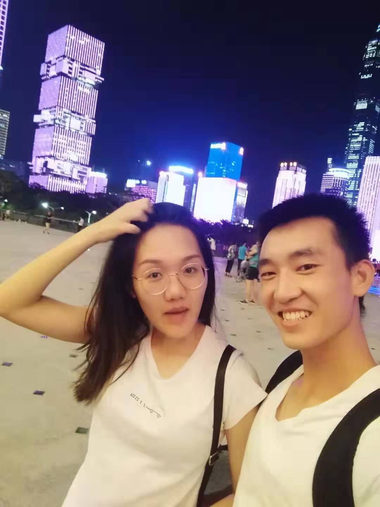

月月❤思琪
按键盘 "↓" 倾听对傻琪的真情告白
过去的月月和思琪一直是一个人生活，享受着孤独，也憧憬着爱情。
月月对思琪的表白，思琪听到了吗
月月和思琪的第一张合照
两个人在长沙的寒冬坐公交
傻琪向傻月比心
傻琪送月月回武汉
思琪和月月在东莞
在武汉站，送傻琪回长沙
太舍不得了，拉着小公举多拍两张
带小公举户部巷吃吃吃
好不容易把小公举骗上长江大桥
乘机啵啵她一个

小公举脚很痛，都怪我让她走太多路
离开长沙之前，傻琪陪我逛湘江
就想悄悄的从背后抱着你
一辈子都不放手
委屈巴巴的傻琪
陪我逛武汉光谷
看，傻琪的眼中是谁
臭琪，就你会撅嘴呀！

亲亲傻琪的眉毛，木啊~

亲亲眉毛还不够，再亲亲嘴，木啊~木啊~
傻琪：咋俩头一样大
跟小公举一起逛艺术展
看什么看，看谁嘴大
天上有啥，两个傻子
市民中心看灯光展啦，灯光美，傻琪更美
头顶着灯光，手牵着小公举，真幸福
这也太好玩了吧
傻琪：我们的眼睛去哪儿啦
我要堵住你的大嘴巴
陪傻琪打长沙赛
带傻琪看海,你看海,我看你
竟敢抢我的肉，看我不打你
偏不给你亲，我把嘴闭上看你怎么办
靠着我的傻月月
我小黄是一个戴着绿帽子的老实人
吃饱了，欧耶！
别打扰本公举吃肉！
傻琪：我男朋友真帅
想带你尝尽世间的美食
愿背后的祈愿都是对我们的祝福
等我迎娶你的那天，也要这么大的花花
总有一天，我也会牵你走向教堂
我愿变成童话里，你爱的那个天使
傻琪：哎呀，人家弄一下头发先啦
给我家屁屁过生日
嘟嘟嘟,
人家是最可爱的小公举
来张嘴,啊~
屁屁带着傻琪的帽帽
傲娇的小公举要扶一下帽帽
沉思的小傻，真美
我跟我的傻月在这里
愿得一人心，白首不相离
你就是我的远方,是我一辈子都想要去呵护的傻琪
I love you

傻月和傻琪的故事会一直继续下去。
无论精彩、平淡都会是他们喜欢的。
-- 按“Esc"键有惊喜